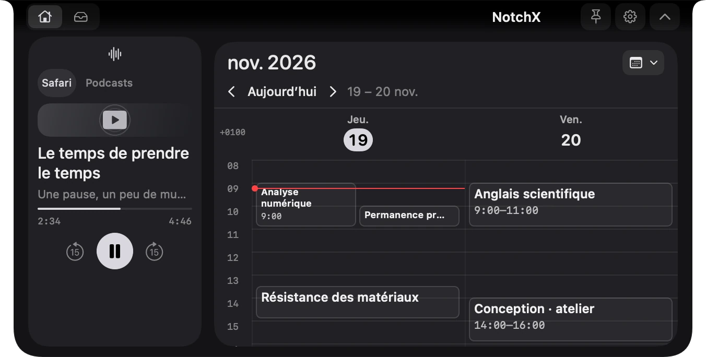
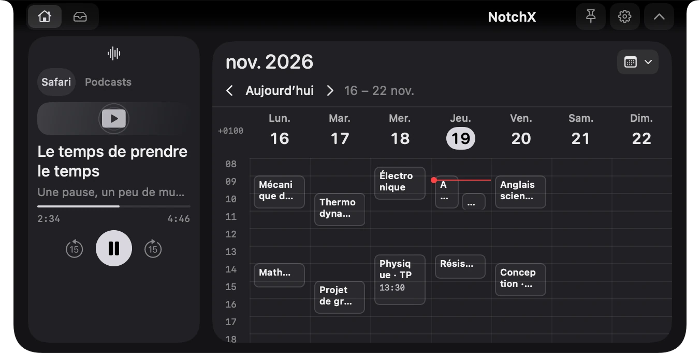
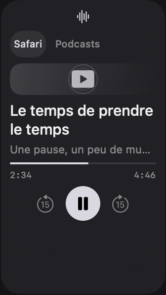
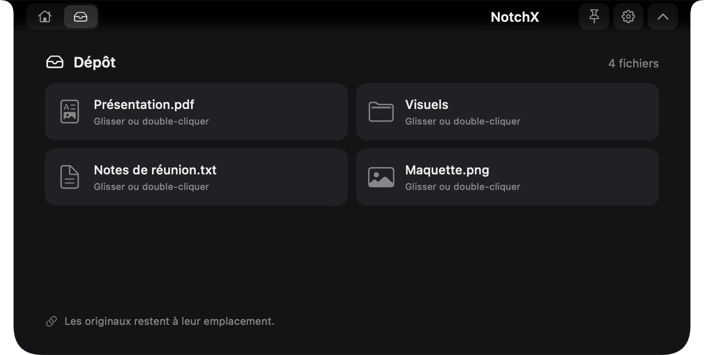

Tout part de l’encoche.
L’agenda, les commandes de lecture et les fichiers dont vous avez besoin, à portée de curseur sur votre Mac.
macOS 14 ou ultérieur Apple Silicon

Sous l’encoche du Mac
Retrouvez vos événements en vue jour, deux jours ou semaine.

Mettez en pause ou reprenez la lecture dans Safari et Apple Podcasts.

Glissez un fichier sous l’encoche et récupérez-le depuis une autre fenêtre.
